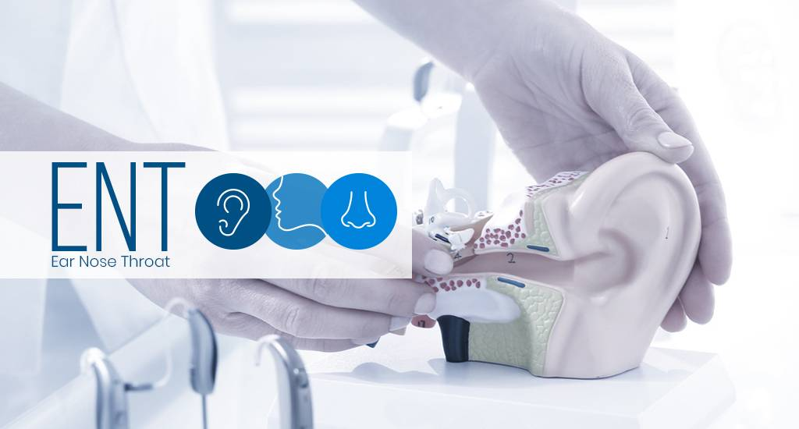

Specialities
| Dermatology Dermatology is a branch of study in medicine that deals with the problems of skin, scalp, hair and nails. In an age, when the level of pollution is escalating every day, many people are suffering from skin, scalp and hair related problems and disorders. Hence, the demand of the dermatologists is on the rise. The dermatologists are trained physicians who treat patients suffering from various skin, scalp, and hair and nail problems and disorders and help them to lead a normal and healthy life. |
Mental Health 
Mental health includes our emotional, psychological, and social well-being. It affects how we think, feel, and act. It also helps determine how we handle stress, relate to others, and make choices. Mental health is important at every stage of life, from childhood and adolescence through adulthood. |
Emergency Medicine The practice of emergency medicine includes the initial evaluation, diagnosis, treatment, coordination of care among multiple clinicians or community resources, and disposition of any patient requiring expeditious medical, surgical, or psychiatric care. |
| ENT  |
Fetal Medicine |
Nephrology |